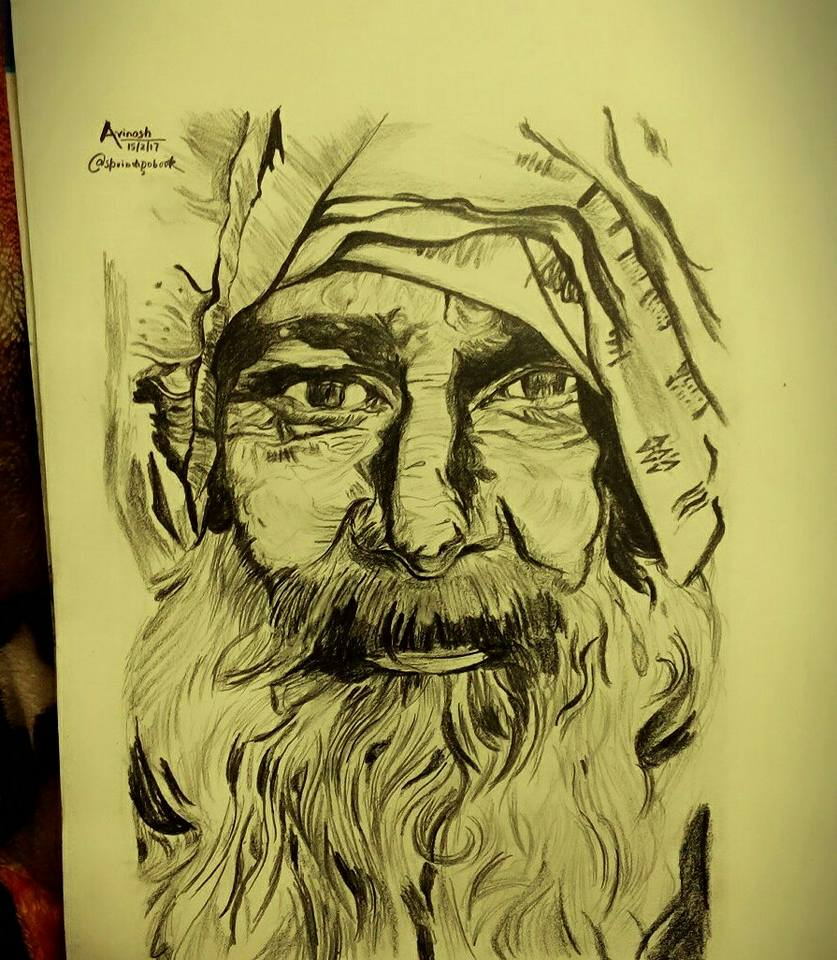

Beginner_Sketch_Avinash
@sprindigobook
O
fficial Page of Avinash Yadav | Avinash yadav works mainly with ordinary black pens to magically illustarte his "doodle" world. The 18 years old artist considers his art as a personal hobby which turned out to be part-time freelance work being recognized by various design blogs, international magazines and online communities. Most of his works are characterised by whimsical lines, patterns, characters and little elements that are spontaneously combined to create massive compositions depicting his everyday experiences or anything that inspires him.
As a kid, Avinash has been exposed to various art stuff as influenced of ownself. Over the years,he tried various art mediums and finally settled with using black fine liners in his own style of drawing and eventually transform this hobby into a professional career.

Devotion
avinash on Mar 27th 2017 with 4 comments
A sketch (ultimately from Greek σχέδιος – schedios, "done extempore"[1][2][3]) is a rapidly executed freehand drawing that is not usually intended as a finished work.[4] A sketch may serve a number of purposes:.
it might record something that the artist sees, it might record or develop an idea for later use or it might be used as a quick way of graphically demonstrating an image, idea or principle
Sketches can be made in any drawing medium. The term is most often applied to graphic work executed in a dry medium such as silverpoint, graphite, pencil, charcoal or pastel.
Bear Grylls
avinash on Mar 27th 2017 with 4 comments
A sketch (ultimately from Greek σχέδιος – schedios, "done extempore"[1][2][3]) is a rapidly executed freehand drawing that is not usually intended as a finished work.[4] A sketch may serve a number of purposes:.
it might record something that the artist sees, it might record or develop an idea for later use or it might be used as a quick way of graphically demonstrating an image, idea or principle
Sketches can be made in any drawing medium. The term is most often applied to graphic work executed in a dry medium such as silverpoint, graphite, pencil, charcoal or pastel.
Leonardo DeCaprio
avinash on Mar 27th 2017 with 4 comments
A sketch (ultimately from Greek σχέδιος – schedios, "done extempore"[1][2][3]) is a rapidly executed freehand drawing that is not usually intended as a finished work.[4] A sketch may serve a number of purposes:.
it might record something that the artist sees, it might record or develop an idea for later use or it might be used as a quick way of graphically demonstrating an image, idea or principle
Sketches can be made in any drawing medium. The term is most often applied to graphic work executed in a dry medium such as silverpoint, graphite, pencil, charcoal or pastel.
The Magical Eye
avinash on Aug 31st 2016 with 4 comments
Hold the center of the printed image right up to your nose. It should be blurry. Focus as though you are looking through the image into the distance.
Very slowly move the image away from your face until the two squares above the image turn into three squares. If you see four squares, move the image farther away from your face until you see three squares.
If you see one or two squares, start over!When you clearly see three squares, hold the page still, and the hidden image will magically appear. Once you perceive the hidden image and depth, you can look around the entire 3D image.
The Emotional Eye
avinash on sep 23rd 2011 with 44 comments
If you are among those people who are mystified by moods, new research offers hope. A new study shows that certain types of reading can actually help us improve our sensitivity IQ.
To find out how well you read the emotions of others, take the Well quiz, which is based on an assessment tool developed by University of Cambridge professor Simon Baron-Cohen.
For each photo, choose the word that best describes what you think the person depicted is thinking or feeling.
Rockstar
avinash on july 4th 2016 with 28 comments
A large crowd gathers outside the Verona Arena in Italy, with eager fans queuing to watch the performance of Jordan (Ranbir Kapoor), a rock musician. Despite being mobbed, Jordan manages to escape and reach the arena.
He shows a complete disregard for his fans, storms onto the stage in a fit of rage and starts strumming angrily on his guitar. A flashback reveals the story of Jordan, whose real name is Janardhan Jhakar a.k.a. JJ, a simple Jat boy from, Delhi
He is a student at Hindu College who dreams of becoming an international star, and this dream is often laughed at by his friends and class mates. Khatana(Kumud Mishra), the canteen owner, tells JJ that the only way a meaningful melody can be produced is by undergoing trauma via a heartbreak.
Instinct
avinash on aug 27th 2016 with 4 comments
Instincts are inborn complex patterns of behavior that exist in most members of the species, and should be distinguished from reflexes, which are simple responses of an organism to a specific stimulus, such as the contraction of the pupil in response to bright light or the
spasmodic movement of the lower leg when the knee is tapped. The absence of volitional capacity must not be confused with an inability to modify fixed action patterns.
For example, people may be able to modify a stimulated fixed action pattern by consciously recognizing the point of its activation and simply stop doing it, whereas animals without a sufficiently strong volitional capacity may not be able to disengage from their fixed action patterns, once activated.
Ellie Goudling
avinash on Mar 27th 2017 with 4 comments
Elena Jane "Ellie" Goulding (/ˈɡoʊldɪŋ/ gohl-ding; born 30 December 1986) is an English singer, songwriter and record producer. Her career began when she met record producers Starsmith and Frankmusik, and she was later spotted by Jamie Lillywhite, who later became her manager and A&R.
After signing to Polydor Records in July 2009, Goulding released her debut extended play, An Introduction to Ellie Goulding, later that year.[5]
In 2010, she became the second artist to top the BBC's annual Sound of... poll and win the Critics' Choice Award at the Brit Awards in the same year.
Legends
avinash on Mar 27th 2017 with 4 comments
A sketch (ultimately from Greek σχέδιος – schedios, "done extempore"[1][2][3]) is a rapidly executed freehand drawing that is not usually intended as a finished work.[4] A sketch may serve a number of purposes:.
it might record something that the artist sees, it might record or develop an idea for later use or it might be used as a quick way of graphically demonstrating an image, idea or principle
Sketches can be made in any drawing medium. The term is most often applied to graphic work executed in a dry medium such as silverpoint, graphite, pencil, charcoal or pastel.
Elephant
avinash on Mar 27th 2017 with 4 comments
A sketch (ultimately from Greek σχέδιος – schedios, "done extempore"[1][2][3]) is a rapidly executed freehand drawing that is not usually intended as a finished work.[4] A sketch may serve a number of purposes:.
it might record something that the artist sees, it might record or develop an idea for later use or it might be used as a quick way of graphically demonstrating an image, idea or principle
Sketches can be made in any drawing medium. The term is most often applied to graphic work executed in a dry medium such as silverpoint, graphite, pencil, charcoal or pastel.
Johny Depp
avinash on Mar 27th 2017 with 4 comments
A sketch (ultimately from Greek σχέδιος – schedios, "done extempore"[1][2][3]) is a rapidly executed freehand drawing that is not usually intended as a finished work.[4] A sketch may serve a number of purposes:.
it might record something that the artist sees, it might record or develop an idea for later use or it might be used as a quick way of graphically demonstrating an image, idea or principle
Sketches can be made in any drawing medium. The term is most often applied to graphic work executed in a dry medium such as silverpoint, graphite, pencil, charcoal or pastel.
Why so serious
avinash on Mar 27th 2017 with 4 comments
A sketch (ultimately from Greek σχέδιος – schedios, "done extempore"[1][2][3]) is a rapidly executed freehand drawing that is not usually intended as a finished work.[4] A sketch may serve a number of purposes:.
it might record something that the artist sees, it might record or develop an idea for later use or it might be used as a quick way of graphically demonstrating an image, idea or principle
Sketches can be made in any drawing medium. The term is most often applied to graphic work executed in a dry medium such as silverpoint, graphite, pencil, charcoal or pastel.